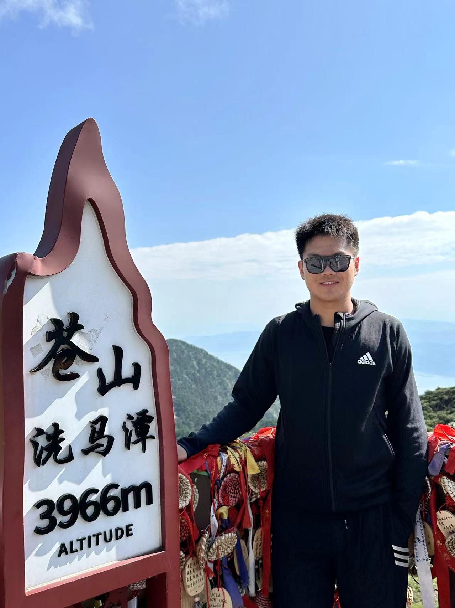

Research Group
For Prospective Candidates
We are honored by your interest in joining our research group. To better understand our work and methodologies, I encourage you to explore our publications. If our research aligns with your interests, please feel free to reach out via email at xingranc@ieee.org.
We particularly welcome candidates with a strong background in one of the following areas: (i) probability theory, (ii) information theory, or (iii) machine learning.
Current Members
Ph.D. Students
Kang Yan (2024 - 2028) @ UESTC; co-advised with Prof. Kun Yang |
Master's Students
 |
Yi Zhuang (2024 - 2027) @ UESTC; co-advised with Prof. Kun Yang |
Alumni
Former Master’s Students
 |
Kai Li (2023 - 2025), Master's Student @ UESTC; co-advised with Prof. Kun Yang |
Former Research Assistants
|  | Bohao Yang (2024 - 2025), Undergraduate Thesis Student @ UESTC |